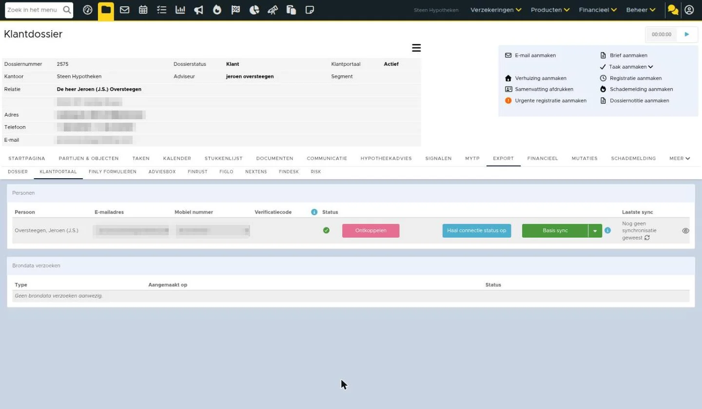
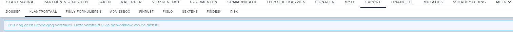
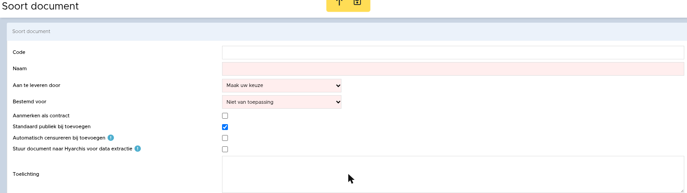

Klantportaal instellen en gebruiken
Klantportaal is een nieuw, modern klantportaal. Hierin kan jouw klant documenten uploaden, zijn hypotheekaanvraag volgen, belangrijke berichten lezen en zijn lopende producten inzien.
Starten met Klantportaal
Als je eBlinqx al gebruikt en Klantportaal wilt gaan gebruiken, vul dan onderstaand contactformulier in. We nemen vervolgens contact met je op voor een demonstratie.
Zodra je kiest voor Klantportaal, brengt Blinqx de inrichting en kosten in rekening. Blinqx verzorgt vervolgens de inrichting van de koppeling. Hierin wordt ook afgestemd of je met diensten of producten werkt, zodat de werking van Klantportaal aansluit bij jouw dagelijkse werkzaamheden.
Consument uitnodigen voor Klantportaal
Wanneer Klantportaal volledig is ingericht kan je ermee gaan werken. Maak in een klantdossier eerst een dienst voor het hypotheekadvies aan. Maak voor deze dienst ook een stukkenlijst aan.
Onder de dienst wordt de workflow Klantportaal - uitnodiging versturen opgestart. Via de workflowpijl kan je de uitnodiging voor Klantportaal versturen naar de klant.
De klant ontvangt nu een e-mail en klikt hierin op 'Activeer je online kluis'. Binnen Klantportaal wordt de klant vervolgens door een beveiligingsproces met SMS code begeleid om het account te activeren. Let op: het is niet mogelijk om Klantportaal te activeren vanaf een mobiel of ipad. De klant wordt dan doorgeleid naar een scherm om een QR-code te scannen. Klantportaal zal eerst vanaf een computer/laptop geactiveerd moeten worden. Vervolgens kan dan de QR-code gescand worden om de app te installeren op de telefoon of ipad.
E-mailadres en mobiel nummer
De uitnodiging wordt verstuurd naar het e-mailadres en mobiele nummer die staan opgevoerd onder de eerste aanvrager. Indien onder de aanvrager geen e-mailadres staat ingevuld dan zal de workflow aangeven dat er geen e-mailadres aanwezig is. Wat betreft het mobiele nummer moet er onder de aanvrager een nummer bekend zijn met als type Mobiel.
Het e-mailadres en mobiel nummer kan je controleren via het tabblad Partijen & Objecten en dan klikken op de betreffende persoon.
Is het e-mailadres of mobielnummer foutief (bijvoorbeeld een cijfer te weinig) dan wordt de uitnodigingse-mail niet verstuurd. Ook moet het een bestaand mobielnummer zijn, hierop vindt een validatie plaats. Is het een niet bestaand nummer dan wordt de uitnodiging niet verstuurd.
Let op: het is niet mogelijk om de activatiemail te versturen naar een overige partij ook al staat deze aangemerkt als eerste aanvrager en staan het mobiele nummer en e-mailadres ingevuld.
Verificatiecode
Om Klantportaal te activeren ontvangt de klant per sms een verificatiecode. Klantportaal kan deze sms alleen verzenden naar Nederlandse, Engelse, Duitse en Belgische mobiele nummers (06, 04, 01 en 07 nummers). Is het een ander buitenlands nummer dan herkent eBlinqx dit bij het versturen van de uitnodiging, waarop er een verificatiecode terugkomt in eBlinqx. Na het verzenden van de uitnodiging verschijnt er een verificatiecode in het tabblad Export - Klantportaal. Deze is eventueel op te halen door middel van de tag [dossier->klantportaal handmatige verificatiecode]. Jij kunt deze verificatiecode vervolgens aanleveren bij de klant.
Uitnodiging niet verstuurd
Om de uitnodiging te kunnen versturen is het dus belangrijk dat onder de eerste aanvrager (in het product vanuit waar de uitnodiging wordt verstuurd via de workflow) een e-mailadres en mobielnummer correct staan opgevoerd.
Lukt het niet om de uitnodiging te verzenden dan verschijnt in de workflow de stap 'Klantportaal is niet verzonden, check dossier gegevens en verstuur opnieuw'. Het kan dan zijn dat onder de eerste aanvrager geen correct e-mailadres of mobiel nummer staat. Het kan ook zo zijn dat er op het e-mailadres al een actieve Klantportaal aanwezig is. Dit kan zijn in een ander dossier of als extra gebruiker in een bestaande Klantportaal. Dit kan je uitzoeken door op het gebruikte e-mailadres te zoeken via het dashboard. Zo kan je zien of het e-mailadres nog in een ander dossier wordt gebruikt en of hier een actieve Klantportaal in staat. Om dit te checken kan je ook de rapportage CRM - Klanten met Klantportaal gebruiken. Helaas kan je op deze manier niet zien of het e-mailadres voor een extra gebruiker is gebruikt. Dit kunnen wij wel voor je controleren. Je dient deze actieve Klantportaal of de extra gebruiker te verwijderen, voordat je in het gewenste dossier een nieuwe uitnodiging Klantportaal kunt versturen.
Opnieuw uitnodigen
In het tabblad Klantportaal zie ook of jouw klant de uitnodiging al heeft geaccepteerd.
Heeft de klant de e-mail niet ontvangen of per ongeluk verwijderd, kies dan via de workflow onder de dienst voor de stap 'Klantportaal activatiemail nogmaals naar klant versturen'.
Indien je deze stap niet in de workflow hebt dan kan het zijn dat de workflow verouderd is. Stuur dan een e-mail naar support-eblinqx@blinqx.tech.
Uitnodiging intrekken bij niet werkende link of uitnodiging naar ander e-mailadres versturen
Het kan gebeuren dat je de uitnodiging hebt verstuurd naar de klant, maar dat de link niet meer werkt. De klant krijgt dan na het klikken op de link de melding 'Uitnodiging niet gevonden'. Ook kan het zijn dat de e-mail naar een foutief e-mailadres is verstuurd. In deze scenario's werkt het niet om de uitnodiging nogmaals via de workflow te verzenden naar de klant. Je kunt dan de volgende stappen nemen. Je klikt op de knop 'Uitnodiging intrekken'.
Vervolgens verwijder je onder het tabblad Workflow de workflow Klantportaal. Dit onder het product, meestal de dienst, vanuit waar je de uitnodiging hebt verstuurd. Middels het plusicoon voeg je deze workflow opnieuw toe. Let op: hiervoor dien je de juiste rechten te hebben.
Vanuit de nieuw toegevoegde workflow stuur je de e-mail met daarin de activatielink opnieuw.
Status uitnodiging bijwerken
Als de klant de uitnodiging net heeft geaccepteerd, maar dit nog niet is bijgewerkt in eBlinqx, gebruik je de knop 'Haal uitnodiging status op' om de actuele status te bekijken.
Extra gebruiker toevoegen
Wanneer Klantportaal is geactiveerd door de klant dan is het mogelijk om vanuit Klantportaal een extra gebruiker aan te maken. Deze gebruiker kan dan ook inloggen in Klantportaal. Dit kan zowel gedaan worden door de adviseur als de klant zelf. Je gaat hiervoor naar Klantportaal - Instellingen - Extra gebruikers. Je klikt op 'Extra gebruiker toevoegen'.
Vervolgens vul je de juiste gegevens in en klik je op 'Opslaan'. Er wordt een e-mail gestuurd naar de extra gebruiker met daarin een link om naar Klantportaal te gaan. Let op: op één apparaat kan je niet met twee verschillende gebruikers inloggen.
Zodra de extra gebruiker is ingelogd, kan hij ook de tweestapsverificatie instellen. Dit onder 'Beveiliging'
Let op: het is niet mogelijk om met het e-mailadres van deze extra gebruiker een geheel nieuwe Klantportaal aan te maken. Dus is er een bepaalde persoon als extra gebruiker ingesteld voor Klantportaal dan kan niet in zijn persoonlijk dossier met hetzelfde e-mailadres een Klantportaal voor hemzelf aangemaakt worden.
Bedrijf uitnodigen voor Klantportaal
Zakelijke klanten kun je ook uitnodigen voor een Klantportaal voor hun bedrijf. Hiervoor dient er tenminste één organisatie met de rol klant opgevoerd te zijn in het klantdossier en de workflow voor de zakelijke Klantportaal moet ingericht zijn.
Je nodigt de klant als volgt uit. In de workflow klik je op de stap 'Klantportaal aanmaken. Klik hier om naar tabblad Klantportaal te gaan.'
Je wordt automatisch doorgeleid naar het tabblad Export - Klantportaal. Selecteer hier het e-mailadres en mobiel nummer of kies 'Anders nl.' om er handmatig één in te voeren. Wanneer je dit hebt gedaan, klik je op 'Uitnodiging link ophalen'. Vanuit de zakelijke klantportaal workflow wordt automatisch de e-mail met daarin de activatielink verzonden.
Let op: er kan slechts één organisatie per dossier worden uitgenodigd, zodat ieder dossier maar één Klantportaal heeft.
Wil je Klantportaal aanbieden aan je zakelijke klanten?
Stuur dan een e-mail naar support-eblinqx@blinqx.tech. Wij nemen dan contact met je op om dit in te richten.
Particulier vs zakelijk
Particulier en zakelijk dossier
In één eBlinqxomgeving is het mogelijk dat de particuliere klant die ook een bedrijf heeft twee aparte Klantportaal wil hebben. Eén vanuit het particuliere dossier en één vanuit het zakelijke dossier. Dit is mogelijk. Het hangt af van de ingestelde settings of er op één e-mailadres meerdere Klantportalen aangemaakt kunnen worden. Staat deze setting aan dan mag het e-mailadres in het particulier en zakelik dossier gelijk zijn. Staat deze setting niet aan dan is bij het activeren het belangrijk dat het e-mailadres die gebruikt wordt in het particuliere dossier anders is dan het e-mailadres dat gebruikt wordt in het zakelijke dossier. Het mobiele nummer hoeft niet anders te zijn.
Wachtwoord vergeten
Als de klant zijn wachtwoord is vergeten dan kan hij zelf een nieuw wachtwoord instellen. Hiervoor gaat de klant naar Klantportaal. Hij komt in het scherm waar hij zijn inloggegevens moet invoeren. Hieronder staat 'Wachtwoord vergeten?'. Door hierop te klikken komt de klant in een volgend scherm. Hier moet hij het e-mailadres invullen die gebruikt is om Klantportaal aan te maken. Naar dit e-mailadres wordt een e-mail verstuurd om een nieuw wachtwoord aan te maken.
Let op: 'Wachtwoord vergeten?' werkt alleen als de klant zijn Klantportaal heeft geactiveerd. Is Klantportaal niet geactiveerd dan kan je niet op deze manier een wachtwoord aanmaken. De klant dient via de toegestuurde e-mail Klantportaal eerst te activeren. Als de link is verlopen, zal er een nieuwe e-mail met activatiemail verstuurd moeten worden. Dit kan door de uitnodiging in te trekken en vervolgens de e-mail opnieuw te versturen.
In meerdere dossiers Klantportaal op hetzelfde e-mailadres
Het is mogelijk om vanuit meerdere dossiers een Klantportaal aan te maken op hetzelfde e-mailadres en mobiel nummer. Dit moet ingericht staan en je moet dan diverse stappen volgen. Hier lees je er meer over.
Staat dit niet ingesteld dan is het niet mogelijk om op één e-mailadres in meerdere dossiers een Klantportaal aan te maken. Probeer je dit wel dan kan het zijn dat de uitnodigingsmail niet wordt verstuurd of dat er een melding verschijnt dat de combinatie e-mailadres en mobielnummer al in een ander dossier is gebruikt voor activatie Klantportaal of als extra gebruiker. Het kan zijn dat er een dubbel dossier is van de klant. Je dient dan in het ene dossier de koppeling Klantportaal te verwijderen om vervolgens in het nieuwe dossier de uitnodiging te kunnen versturen.
Meekijken met de klant
Wanneer de klant de uitnodiging heeft geaccepteerd dan zie je dit terug onder het tabblad Klantportaal. Vanuit daar zijn verschillende mogelijkheden. Als je de klant instructies wilt geven over het gebruik van Klantportaal, kun je meekijken in zijn Klantportaal. Klik hiervoor op het oogicoon aan de rechterkant.
Klantprofiel opstellen
Het is mogelijk om de klant vanuit Klantportaal een klantprofiel in te laten vullen. Het klantprofiel kan je gebruiken om goed voorbereid het adviesgesprek in te gaan. Hiermee inventariseer je de doelstellingen van klanten, hun kennis en ervaring, financiële positie en risicobereidheid. Klanten vullen een vragenlijst in die als PDF wordt opgeslagen. Het verzoek voor het opstellen van het klantprofiel kan je op twee manieren opstarten, namelijk via de workflow vanuit eBlinqx en vanuit Portefeuillesignalen.
Vanuit eBlinqx start je het verzoek tot het opstellen van een klantprofiel via workflow. Dit kan een eigen workflow voor het klantprofiel zijn of er is een stap toegevoegd aan de workflow Klantportaal. Is de workflow niet onder de dienst aanwezig dan kan je deze toevoegen, indien je hier de rechten voor hebt, via het tabblad Workflow en plusicoon. Dit kan je ook doen als je voor de twee persoon een klantprofiel wilt klaarzetten. Vanuit de workflow geef je aan dat het klantprofiel aangemaakt kan worden. De klant ontvangt hiervan een pushbericht via de Klantportaalapp. In Klantportaal kan de klant het klantprofiel invullen. Na het invullen, komt het ingevulde klantprofiel als PDF bestand in eBlinqx te staan. Heb je de workflow voor het klantprofiel niet en wil je hiervan gebruik maken stuur dan een e-mail naar support-eblinqx@blinqx.tech.
Wordt het klantverzoek vanuit Portefeuillesignalen opgestart dan komt het PDF bestand in Klantportaal te staan.
Het klantprofiel is alleen in het Nederlands beschikbaar (ook al staat de taal in Klantportaal op Engels).
Verzoeken aanmaken
Brondata
Vanuit Klantportaal is het mogelijk om brondata op te vragen via Veilig Ophalen en Ockto. Deze verzoeken maak je aan vanuit eBlinqx en de klant verwerkt deze verder vanuit Klantportaal. Hier lees je er meer over.
Formulieren
In samenwerking met Finly is het mogelijk om formulieren aan te maken. Deze formulieren komen ook als verzoek in Klantportaal te staan.
Stukken delen en beoordelen
In Klantportaal verzamelt de klant zijn documenten die benodigd zijn voor het advies of de hypotheekaanvraag. De klant ziet in Klantportaal de benodigde stukken, kan deze uploaden en de status (goed- of afgekeurd) van zijn stukken inzien.
Stukkenlijst delen met de klant
Als je in eBlinqx een stukkenlijst aanmaakt, handmatig een stuk toevoegt aan een stukkenlijst of een HDN documentenaanvraag (DA bericht) verwerkt, wordt er in Klantportaal een documentverzoek klaargezet voor het bijbehorende dienst of product.
De stukken in de stukkenlijst in een klantdossier worden automatisch gedeeld met de klant. Hiervoor hoef je geen handmatig actie uit te voeren.
Als een document niet hoeft worden aangeleverd door de klant, maar bijvoorbeeld door de maatschappij, dan kan je beheerder dit aanpassen bij 'Soort documenten beheer'. Zet hierbij 'Aan te leveren door' op 'Maatschappij'. Het stuk is dan niet meer zichtbaar in Klantportaal.
Wijkt een specifiek dossier af van deze algemene instelling, dan kan je dit per stuk aanpassen. Klik in het dossier op de naam van het stuk in de stukkenlijst en wijzig het veld 'Aan te leveren door'. Deze aanpassing geldt dan alleen voor dit ene stuk in dit dossier en overschrijft de instelling uit 'Soort documenten beheer' — dus ook de zichtbaarheid in Klantportaal voor dit stuk verandert mee.
Stukken niet zichtbaar in Klantportaal
Het stuk moet aan verschillende voorwaarden voldoen om zichtbaar te zijn in Klantportaal, namelijk:
- Het product waaraan de stukkenlijst is gekoppeld moet op publiek staan om de stukkenlijst te zien in Klantportaal.
- Het stuk/document moet een categorie/soort document hebben. Documenten zonder een categorie worden niet gesynchroniseerd naar Klantportaal
- Aan te leveren door moet op Klant staan (zie hierboven)
- De beoordeling maatschappij heeft niet de status 'Vervallen'. Stukken met de status 'Vervallen' worden niet getoond in Klantportaal
- Als de maatschappij middels een DA bericht laat weten dat het stuk akkoord of afgekeurd is en er hangt geen bestand onder het verzoek dan is deze ook niet meer als openstaand verzoek zichtbaar in Klantportaal
- Het kan helpen om te klikken op de knop 'Bestand opnieuw uploaden naar Klantportaal' in het stuk onder het bestand
Stukken uploaden
Onder het verzoek staan alle benodigde documenten.
Door de knop 'Voeg document(en) toe' te klikken kan de klant het document koppelen aan het stuk. Het is mogelijk om meerdere documenten onder één stuk toe te voegen. Deze worden samengevoegd tot één document die gesynchroniseerd wordt naar eBlinqx.
Let op: als de klant een document heeft toegevoegd en hij voegt later nog meer documenten onder het stuk/verzoek toe dan wordt dit bij synchroniseren continue samengevoegd met elkaar. Op deze manier kan het voorkomen dat je veel samengevoegde (dubbele) documenten onder het stuk in eBlinqx krijgt. Dit kan je voorkomen door een stuk intern goed te keuren. Als het stuk is goedgekeurd dan kan de klant er geen andere documenten meer aan toevoegen.
Het kan gebeuren dat de klant een foutief document onder het verzoek toevoegt. Als adviseur dien je dan eerst het stuk af te keuren in eBlinqx. In Klantportaal komt dan het afgekeurde document onder het verzoek als afgekeurd te staan. Onder dit afgekeurde verzoek worden de eerder aangeleverde documenten verwijderd. De klant voegt een nieuw document toe en dit nieuwe document komt onder het stuk te staan. Deze dien je dan wel weer opnieuw intern te beoordelen (beoordeling intern blijft op afgewezen staan). Op deze manier voorkom je dubbele/samengevoegde bestanden onder het stuk.
In het scherm waar de klant de documenten kan toevoegen, staat links 'Toelichting'. Hier wordt de tekst getoond die bij het betreffende stuk staat ingevuld in Beheer - Soort documenten beheer - betreffende stuk - het veld Toelichting. Doe je hierin een aanpassing dan wordt dit niet met terugwerkende kracht getoond. Dit wordt pas zichtbaar bij nieuwe stukken/verzoeken.
Beveiligd document
Het is niet mogelijk om een beveiligd document onder het stuk te uploaden. Hiervan verschijnt een melding.
Controle geldigheid document
Let op: alleen beschikbaar in eBlinqx, niet in eBlinqx Connect
Het is mogelijk om de geldigheid van identiteitsbewijzen, werkgeversverklaringen en loonstroken te laten controleren door Klantportaal. Na het uploaden verschijnt er een melding als er iets met de geldigheid is. Deze melding is niet blokkerend, maar attendeert de klant erop. Hier lees je er meer over.
Melding wanneer klant stuk uploadt
Zodra een klant één of meerdere stukken uploadt, ontvang je hiervan een melding in je takenlijst. Klik op de naam van het product om het document te beoordelen. Let op: als de klant binnen de tijdsduur van 2 uur meerdere stukken upload dan wordt er maar één taak aangemaakt. Er wordt dus niet voor ieder stuk wat geüpload wordt een aparte taak gemaakt.
Bericht voor klant als een stuk is afgekeurd
Zodra je een stuk afkeurt óf de maatschappij keurt een stuk af, ontvangt de klant hier een melding van in zijn/haar Klantportaal. De klant ziet dit direct op het dashboard en bij in het tabblad 'Verzoeken'.
Zodra je een stuk goedkeurt, wordt deze in Klantportaal getoond onder 'Goedgekeurd'.
Documenten delen met de klant
In Klantportaal wordt onderscheid gemaakt tussen persoonlijke en algemene documenten.
Persoonlijke documenten
De persoonlijke documenten betreffen de documenten in de blauwe mappen in een klantdossier. Op het moment dat een Klantportaal account actief wordt, worden alle documenten die 'Publiek' staan in het klantdossier ook in Klantportaal van de klant getoond. Dit gebeurt enkel de eerste keer dat een account actief is geworden.
Later kun je andere documenten delen, door de 'Publiek' knop op oranje te zetten.
Als je wilt dat een document niet meer zichtbaar is in Klantportaal van je klant, zet de knop dan op grijs.
In Klantportaal wordt ook het polisblad van verzekeringsproducten getoond. Wanneer er via Aplaza een nieuw polisblad binnenkomt dan wordt automatisch het oude polisblad op niet publiek gezet en het nieuwe polisblad op publiek. Op deze manier wordt het actuele polisblad getoond in Klantportaal.
Algemene documenten
De algemene documenten betreffen de documenten in de rode mappen in een klantdossier. De algemene documenten zijn zichtbaar voor alle gebruikers Klantportaal. Via de verkenner is het mogelijk om de algemene documenten publiek of niet publiek te zetten. Zo kan je bepalen welke algemene documenten de klant wel of niet ziet in Klantportaal. Ook kan je een einddatum geven aan een document. Dit door te klikken op het wijzigingsicoon achter het document. Is de einddatum verstreken dan is het document niet meer zichtbaar in Klantportaal die na deze einddatum zijn aangemaakt. In Klantportaal die al actief zijn voor deze einddatum blijft het document wel zichtbaar mits deze op publiek staat. Let op: voor het werken met de einddatum moet een proces aangezet worden. Wil je hiervan gebruik maken stuur dan een e-mail naar support-eblinqx@blinqx.tech.
Berichten delen met de klant
Het is ook mogelijk om berichten te plaatsen in Klantportaal van de klant. Op deze manier kan je belangrijke informatie delen.
Dit doe je door een registratie in een klantdossier op 'Publiek' te zetten. Dit kan je doen bij het aanmaken van een registratie door 'Publiek' aan te vinken of door bij een bestaande registratie de 'Publiek' knop op oranje te zetten.
Als de registratie gekoppeld is aan een e-mail, wordt de inhoud van de e-mail als bericht getoond in Klantportaal (i.p.v. de inhoud van de registratie).
Contactgegevens adviseur delen met de klant
Onder het tabblad Contact in Klantportaal staan de contactgegevens van het kantoor waaronder het dossier valt. Ook wordt onder Product per product de adviseur en zijn contactgegevens getoond, zodat de klant weet bij wie hij moet zijn voor vragen over dit specifieke product.
De gegevens die getoond worden kan je beheren in Beheer - Organisatie & Personen - betreffende kantoor. Het wel of niet tonen van de gegevens regel je met de 'aan/uit-knop'. Staat deze aan (dan is de knop oranje) dan zet je de gegevens op publiek en worden deze getoond.
Dit geldt hetzelfde voor de personen die onder 'Team' en het product getoond worden. Dit zijn de personen die gekoppeld zijn aan het kantoor én op publiek staan. Wanneer een medewerker uit dienst wordt gezet dan wordt deze persoon automatisch op niet-publiek gezet.
Let op: naast het op publiek staan zijn er ook nog andere voorwaarden. Zo moet:
- Het telefoonnummer en het e-mailadres het type 'Algemeen' hebben om getoond te worden
- Het adres moet het type 'Bezoekadres' hebben om zichtbaar te zijn in Klantportaal
- Ook wordt de functieomschrijving getoond. Dit is de functie die staat genoteerd in het veld Vrije functieomschrijving (als je in Beheer - Organisatie & Personen - betreffende kantoor - betreffende persoon op het wijzigingsicoon klikt)
Ondertekenen van documenten door klant
In Klantportaal is het ook mogelijk om documenten te laten ondertekenen door de klant. Dit kan via het digitale vinkje (onderdeel van Klantportaal) of via een digitale handtekening. Lees er hier meer over.
Bericht versturen vanuit Klantportaal
De klant kan vanuit Klantportaal een bericht versturen middels het chaticoon wat rechts onderin in het scherm staat.
Vervolgens krijgt de klant een pop-up te zien waarin hij zijn bericht kan typen, eventueel een bijlage kan toevoegen en vervolgens kan versturen.
Na het versturen van dit bericht wordt er een taak aangemaakt in eBlinqx. Deze taak wordt aangemaakt volgens de volgende logica:
- Er wordt eerst gekeken naar Advisor Support relatie. Hier wordt gekeken wie de als standaard adviseur staat ingesteld bij het kantoor waaronder het dossier valt. Bij deze persoon wordt gekeken wie als dossierverantwoordelijke staat in Advisor support relatie. Op deze dossierverantwoordelijke komt de taak te staan. Is dit een workflowgroep dan wordt er gekeken naar stap 2.
- Als er geen dossierverantwoordelijke bij de standaard adviseur in Advisor support relatie staat ingesteld dan wordt de financieel adviseur uit het dossier opgehaald om de taak op te zetten
- Als er geen financieel adviseur staat ingesteld maar in Advisor support relatie staat wel een standaard adviseur voor het kantoor dan komt de taak op deze standaard adviseur te staan
- Als bovenstaande allemaal niet is gevuld, dan komt de taak niet op naam te staan
Wanneer er een bijlage wordt meegestuurd dan komt dit document onder het tabblad Documenten te staan en in de aangemaakte taak wordt aangegeven dat er een bestand is ontvangen. Verschillende bestandstypes voor deze bijlage zijn toegestaan.
E-mailadres wijzigen in Klantportaal of eBlinqx
In Klantportaal kan de klant via Instellingen zijn accountgegevens wijzigen:
Als de klant hier zijn e-mailadres wijzigt dan wijzigt hij eigenlijk alleen zijn gebruikersnaam Klantportaal, want het betreft de accountgegevens. De adviseur krijgt hiervan geen melding. De klant moet het op een andere manier doorgeven dat zijn e-mailadres gewijzigd is bijvoorbeeld middels het versturen van een bericht.
In eBlinqx kan het nieuwe e-mailadres toegevoegd worden. Het oude e-mailadres kan eventueel verwijderd worden. Dit is verder niet van invloed op de koppeling Klantportaal, deze blijft intact. Onder Export - Klantportaal zal je wel het oude e-mailadres zichtbaar blijven, omdat hiermee de originele koppeling is gemaakt. Wil je hier echt het nieuwe e-mailadres hebben staan dan dien je het huidige Klantportaal te ontkoppelen (zie hieronder) om vervolgens een nieuwe Klantportaal aan te maken.
Klantportaal handmatig synchroniseren
Vanuit het dossier en Klantportaal kunnen er diverse acties worden gedaan, waardoor eBlinqx en Klantportaal automatisch gesynchroniseerd worden. Het is ook mogelijk om handmatig te synchronisatie te starten. Dit doe je via Export - Klantportaal - Basic sync. Hier kan je een keuze maken of je een Basic sync wilt uitvoeren. Dit betreft klantgegevens, producten, contractdocumenten en de voortgang van hypotheekprocessen. Of je kiest voor een volledige sync via het pijltje naast de knop 'Basic sync'. Dan worden klantgegevens, producten, contractdocumenten, de voortgang van hypotheekprocessen, stukkenlijsten, documenten, berichten, kantoorgegevens en openstaan verzoeken opnieuw gesynchroniseerd.
Naast de knop wordt de status aangegeven van de laatste synchronisatie. Zo kan je zien of er een synchronisatie bezig is, in de wachtrij staat of wanneer de laatste synchronisatie (zowel handmatig als automatisch) heeft plaatsgevonden. Zolang er een synchronisatie in de wachtrij staat, is de knop tijdelijk niet te gebruiken.
Toegang intrekken en Klantportaal verwijderen
Als je Klantportaal van de klant wilt verwijderen, doe je dit met de 'Ontkoppelen' knop. De gegevens worden verwijderd uit Klantportaal, maar nog wel bewaard in eBlinqx.
Dit kan bijvoorbeeld het geval zijn als een hypotheekaanvraag niet is doorgegaan of als de klant zijn gegevens wil verwijderen uit Klantportaal.
Gegevens die worden overgezet
De volgende gegevens uit een eBlinqx klantdossier worden in Klantportaal van de klant getoond:
- Persoonsgegevens
- Hypotheek: is de hypotheek in aanvraagfase dan worden de stappen hiervan getoond in Klantportaal door middel van een tijdlijn. De stappen en het aantal stappen die hier worden getoond zijn afhankelijk van het veld 'Moet renteaanbod getekend retour' in de productkaart van de hypotheek. Staat deze op 'Ja' dan worden er 7 stappen getoond. Staat deze op 'Nee' dan worden er 6 stappen getoond. Dit veld kan je maar 1x (handmatig) synchroniseren naar Klantportaal en aan de hand hiervan worden de stappen bepaald. Wissel je na het synchroniseren van 'Ja' naar 'Nee' of van 'Nee' naar 'Ja' dan wordt dit niet meer aangepast in Klantportaal
- Levensverzekering
- Schadeverzekering: onder de verzekeringen heb je het tabblad 'Verzekeringen' en 'Verzekerde objecten'. Onder 'Verzekerde objecten' worden alleen objecten die vallen onder opstal, inboedel of voertuig getoond. Gebouwen van een gebouwenverzekering zie je hier dus niet.
- Contracten
- Consumptief krediet
- Vermogen & bancair producten
- Documenten
- Registraties
- Stukken uit de stukkenlijst
- Te ondertekenen documenten
Klantportaal app
Naast de desktop-versie van Klantportaal is er ook een app. Stukken uploaden, brondata aanleveren, berichten lezen en aanvragen volgen: je klanten doen het eenvoudig met de Klantportaal app. Let op: de app is alleen beschikbaar voor particuliere klanten, niet voor zakelijke klanten.
De klant dient eerst de app op zijn telefoon te installeren via de Playstore of Appstore. Vervolgens moet hij de app koppelen aan zijn eigen Klantportaal door middel van een QR-code. Deze vindt de klant in Klantportaal - Instellingen. Dit is te bereiken via het volgende icoon:
Onder de instellingen staat 'App koppelen'. Door te klikken op 'Koppelen' wordt de QR code zichtbaar die de klant vanuit de app kan scannen.
Met de app kun je ook pushmeldingen sturen naar je klanten. Zo informeer je de klant direct als een er een nieuw bericht is, een document is afgekeurd of ze een document moeten ondertekenen.
Pushmeldingen zijn mogelijk bij:
- Nieuw documentverzoek ontvangen
- Er is een document afgekeurd
- Nieuw tekenverzoek ontvangen
- Nieuw vragenlijst ontvangen
- Nieuw bericht ontvangen
Meer over uitnodigen, stukken en gegevens in UwKluis / Online klantportaal
Uitnodiging naar een specifiek e-mailadres versturen
Verstuur je de uitnodiging vanuit de workflow, dan wordt een e-mailadres gebruikt dat onder de eerste aanvrager staat. Je kunt dan niet zelf kiezen welk adres wordt gebruikt. Heeft de klant meerdere e-mailadressen en wil hij de uitnodiging op een bepaald adres ontvangen, dan heb je twee mogelijkheden:
- Kies in het tabblad Export – UwKluis / Online klantportaal in het dropdownmenu het juiste e-mailadres en mobiele nummer en klik op de knop om de activatielink op te halen. Stuur deze link daarna zelf per e-mail naar de klant. Let op: op deze manier kan de klant UwKluis / Online klantportaal wel activeren, maar kun je geen brondataverzoeken versturen. Die worden namelijk vanuit de workflow verstuurd, en als er al een actieve UwKluis / Online klantportaal is, wordt die workflow direct afgesloten.
- Laat onder de eerste aanvrager alleen het juiste e-mailadres staan en verstuur de uitnodiging vanuit de workflow. Voeg na het versturen de andere e-mailadressen weer toe aan de eerste aanvrager.
Nummers en e-mailadressen die zijn gebruikt om de uitnodiging aan te maken, blijven in het dropdownmenu zichtbaar, ook als ze niet meer onder de persoon of organisatie staan.
Particulier en zakelijk in één dossier
We adviseren om voor de particulier en de organisatie aparte dossiers aan te maken. Staan in één dossier toch zowel een persoon (onder Personen) als een organisatie (onder Organisatie), dan zie je in het tabblad Export – UwKluis / Online klantportaal zowel het blok Personen als het blok Organisaties.
In deze situatie wordt automatisch de workflow voor de particuliere UwKluis / Online klantportaal gestart. Wil je UwKluis / Online klantportaal voor de organisatie aanmaken, dan doe je het volgende:
- Voeg in het tabblad Workflow handmatig de workflow voor de zakelijke UwKluis / Online klantportaal toe. Hiervoor heb je de juiste rechten nodig.
- Ga terug naar het tabblad Export – UwKluis / Online klantportaal.
- Selecteer bij de organisatie het e-mailadres en het mobiele nummer.
- Klik op de knop Uitnodiging link ophalen achter de organisatie.
Let op: je kunt maar één UwKluis / Online klantportaal per dossier hebben. Je kunt vanuit één dossier dus niet zowel voor de persoon als voor de organisatie een UwKluis / Online klantportaal aanmaken. De workflow kan zo worden aangepast dat je vooraf kiest of het om een particuliere of zakelijke UwKluis / Online klantportaal gaat. Neem hiervoor contact op met support (support-eblinqx@blinqx.tech).
Klanten die al een Digimap hebben
Heeft de klant al een Digimap, dan verstuur je de uitnodiging voor UwKluis / Online klantportaal vanuit de workflow met de stap voor klanten met een actief Digimap-account. De klant ontvangt dan een uitnodiging waarin staat dat UwKluis / Online klantportaal de vervanger is van de Digimap. Nieuwe klanten zonder Digimap nodig je uit via de gewone stap.
De workflow voor UwKluis / Online klantportaal start automatisch wanneer je in het dossier een nieuwe dienst aanmaakt. Je kunt de workflow ook handmatig toevoegen onder een bestaande dienst: ga in de dienst naar het tabblad Workflow, klik op het plusicoon en voeg de workflow voor het versturen van de uitnodiging toe.
Bestanden en documenten
- De klant kan documenten in UwKluis / Online klantportaal niet zelf verwijderen of aanpassen.
- Bij stukken kan de klant pdf-bestanden en afbeeldingen uploaden. Afbeeldingen worden omgezet naar pdf.
- Wil de klant een ander soort bestand aanleveren, dan kan hij een bericht via UwKluis / Online klantportaal versturen met het bestand als bijlage. Voor bijlagen bij berichten gelden deze beperkingen niet.
Stukken: wat je moet weten
- Een bestand dat de klant via UwKluis / Online klantportaal uploadt, wordt alleen verwerkt als het stuk in eBlinqx Connect niet de status ‘Intern akkoord’ heeft en nog niet is verzonden (het stuk heeft nog geen verzenddatum).
- Een geüpload document komt onder het stuk te staan met de status ‘Nog te beoordelen’.
- Keur je een stuk af, dan wordt de tekst uit het veld Toelichting beoordeling intern aan de klant getoond als afkeurreden. Houd hier rekening mee bij wat je in dit veld schrijft.
- De klant kan per stuk een notitie achterlaten. Deze zie je in eBlinqx Connect bij het stuk in het veld Toelichting klant.
- Voor wie een stuk bestemd is, wordt bepaald door het veld Bestemd voor in Soort documenten beheer. De optie ‘Niet van toepassing’ bestaat in UwKluis / Online klantportaal niet; zo’n stuk wordt bij de eerste persoon gezet.
- In UwKluis / Online klantportaal worden de stukken gegroepeerd per product, met het producttype en de maatschappij als naam (bijvoorbeeld ‘Hypotheek – naam maatschappij’).
Welke gegevens de klant ziet
- Partner: of de partner wordt meegestuurd, hangt onder andere af van de burgerlijke staat van de eerste persoon. Staat deze op Alleenstaand, dan wordt geen partner meegestuurd.
- Berichten: heeft een publieke registratie geen onderwerp, dan wordt deze in UwKluis / Online klantportaal getoond met als onderwerp ‘Bericht’.
- Premie verzekeringen: de premie die bij verzekeringen wordt getoond, is gebaseerd op het blok pakketpremie in het product.
- Facturen: UwKluis / Online klantportaal kan geen facturen tonen. Facturen worden dus niet overgezet.
- Naam bij verzoeken: is een brondataverzoek of formulier voor de eerste persoon of de partner aangemaakt, dan ziet de klant de naam van die persoon bij het verzoek. Dit is alleen ter herkenning; het ontvangen resultaat koppel je zelf aan de juiste persoon in het dossier.
- Jouw team in de app: op het dashboard van de app ziet de klant ‘Jouw team’. Hier staan de personen die onder het kantoor op publiek staan en van wie het telefoonnummer of e-mailadres ook op publiek staat.
Zo ziet het er nu uit in eBlinqx Connect


